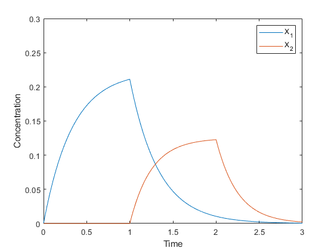

Pavlovian Conditioning of Microbes
The aim of this project is to develop a simple model for Pavlov Conditioning of microbes, and to assess its feasibility using cost-benefit analysis. The goal is to predict whether or not a particular set of environmental changes will lead to conditioning in the cell.
Contents
Setting up the workspace
clear all;
clc;
alpha = [1 2 3 4];
beta = [3 1 ; 2 4 ; 2 1];
K = [1 2 ; 3 3 ; 2 1];
r1 = [1 0];
r2 = [0 1];
r3 = [0 0];
x0 = [0;0;0;0];
tspan1 = 0:0.001:1;
tspan2 = 1:0.001:2;
tspan3 = 2:0.001:3;
tspan = 0:0.001:3;
Solving the differential equations
odes1 = @(t,x) f(x, K, r1, alpha, beta, t); [t1,x1] = ode45(odes1, tspan1, x0); odes2 = @(t,x) f(x, K, r2, alpha, beta, t); [t2,x2] = ode45(odes2, tspan2, x1(end,:)); odes3 = @(t,x) f(x, K, r3, alpha, beta, t); [t3,x3] = ode45(odes3, tspan3, x2(end,:)); x1(end,:) = []; x2(end,:) = []; data = [x1 ; x2 ; x3];
Plotting the Results
The following plots are representative of the increase in benefit(and cost) due to conditioning.
Without Conditioning
plot(tspan,data(:,3:4)); ylabel('Concentration') xlabel('Time') legend('X_1','X_2') ylim([0 0.3])
With Conditioning
plot(tspan,data); ylabel('Concentration') xlabel('Time') legend('X_1','X_2','R_1^*','R_2^*') ylim([0 0.3])